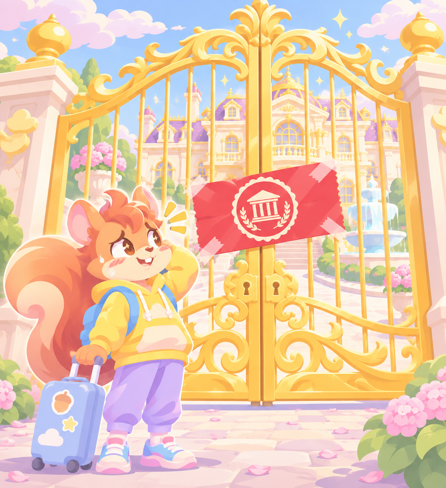
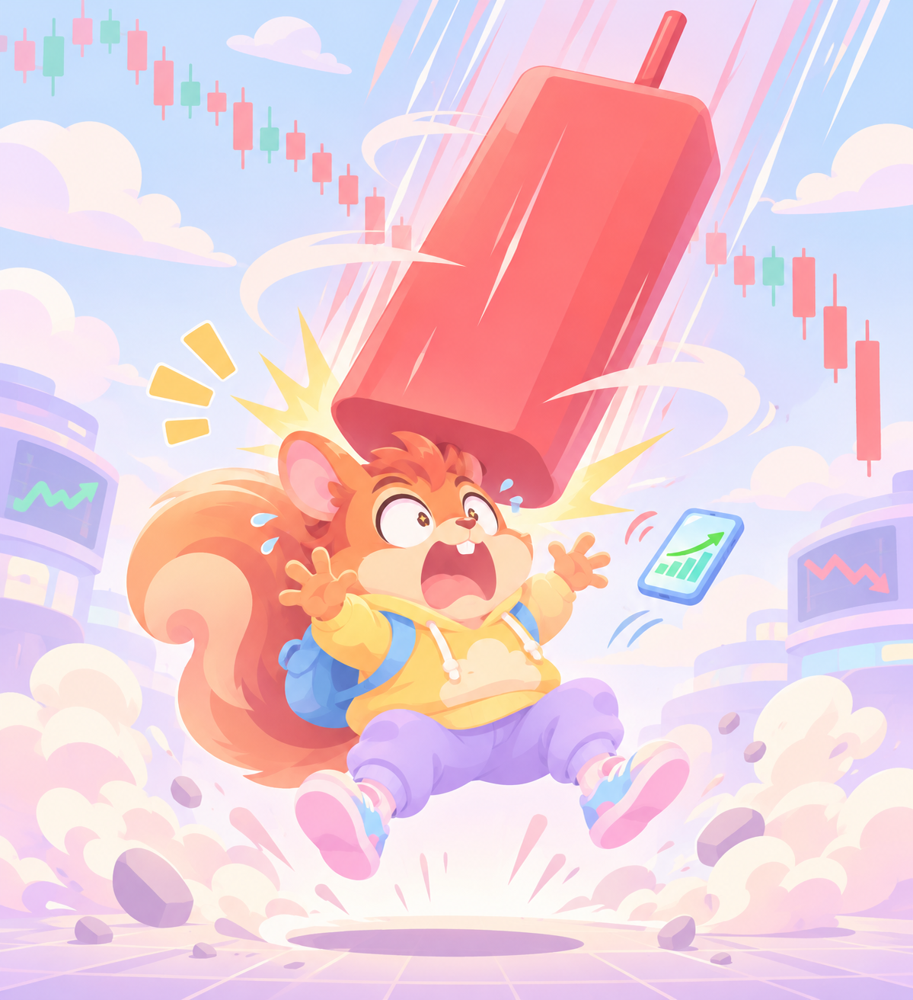
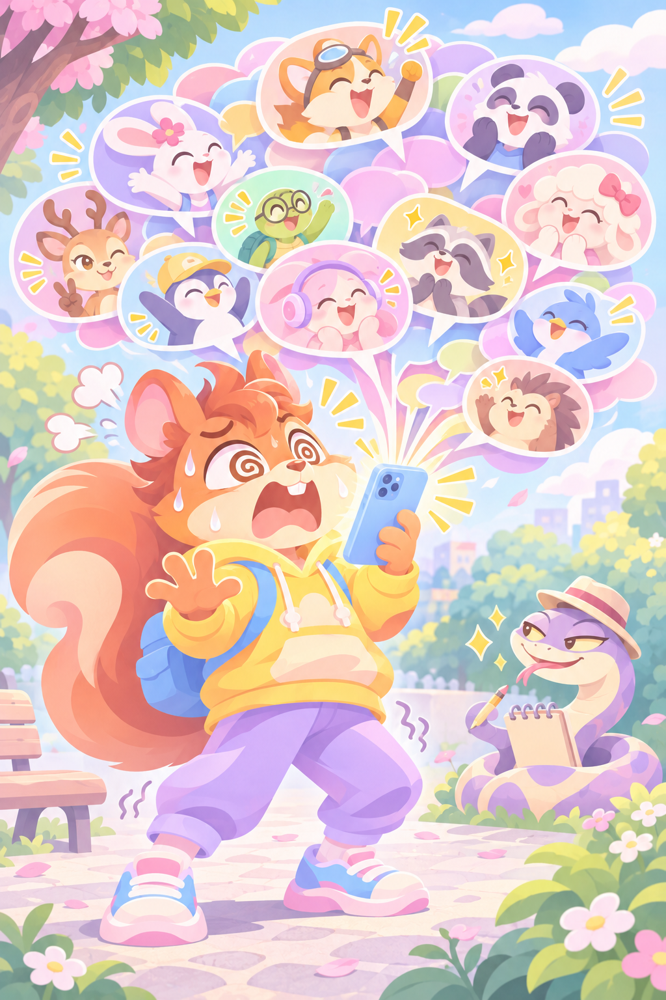
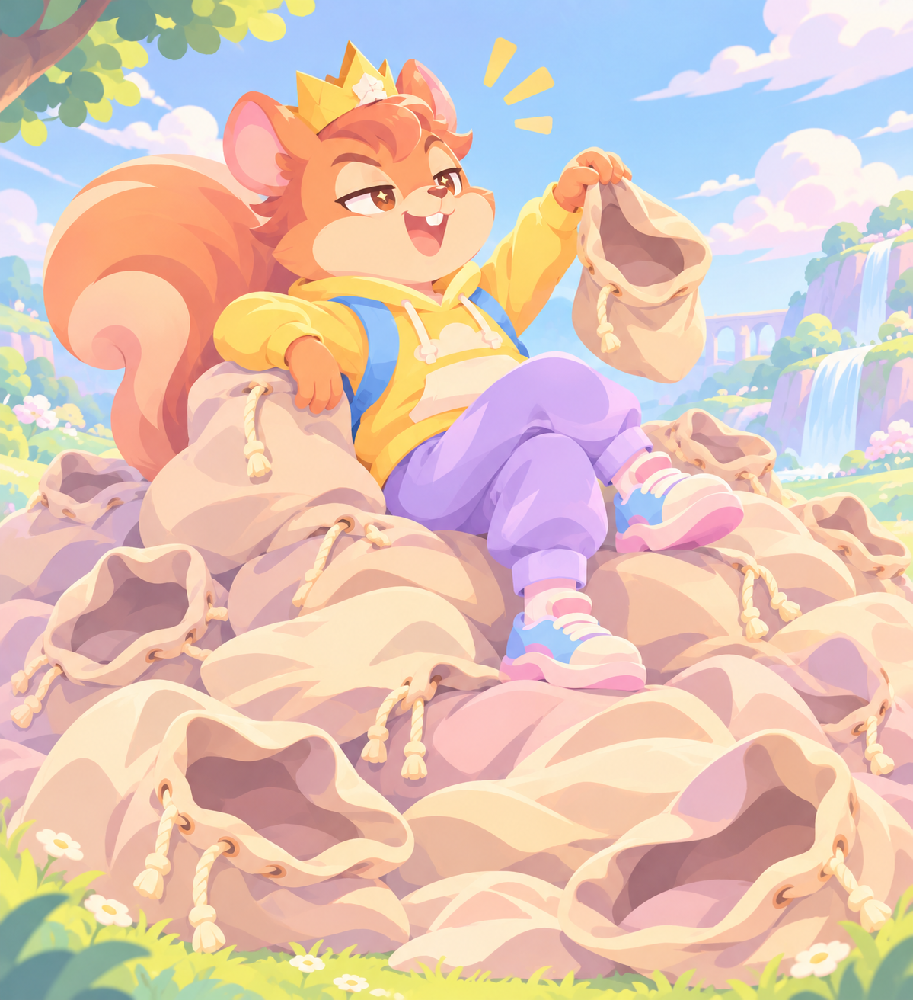

파산 엔딩 가벼운 블랙코미디 샘플
현실은 원래 이렇게 가볍게 굴러간다는 방향입니다. 무거운 장면을 무겁게 그리지 않고, 웃기게 보이는 연출로 풍자합니다. 기준 캐릭터는 P1 변형입니다.

대문에 압류 딱지, 머쓱하게 가방 하나 든 주인공
"3억 원짜리 집에서 200만 원을 못 내 쫓겨났습니다. 최고의 카푸어!"

장대 음봉이 망치처럼 떨어짐, 과장된 놀란 얼굴
"버튼을 누르자마자 빛보다 빠른 청산!"

알림이 쏟아지는 휴대폰, 웃고 있는 독사 대부
"온 숲속 단톡방에 내 채무가 생중계됩니다."

빈 도토리 자루 위에 종이 왕관, 우쭐한 자세
"당신은 파산의 대가입니다. 숲의 모든 동물이 찬사를 보냅니다."
확인할 점: 웃기게 읽히는지, 피해자를 놀리는 것처럼 보이지는 않는지, 엔딩마다 같은 틀로 반복되지 않는지.
괜찮으면 이 톤을 엔딩 일러스트 규칙으로 고정하고, 대표 엔딩 10장을 같은 틀로 뽑겠습니다.